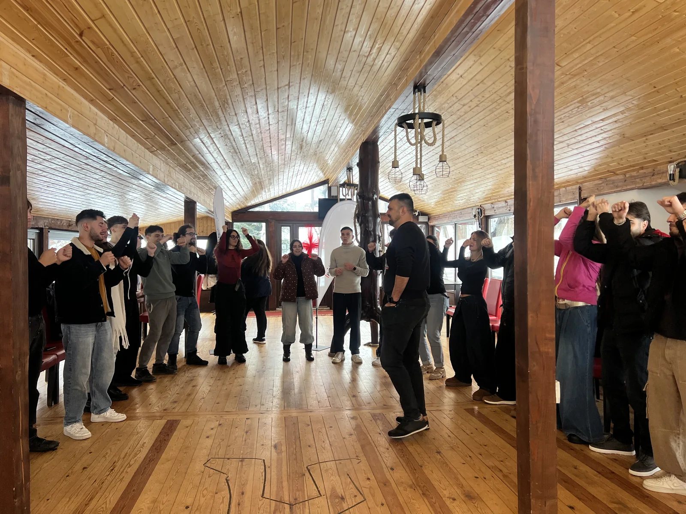

NEWHappening now
BOOST · personal branding, communication and digital identity
BOOST: Your Own Story
Your story, your skills
How can young people make the most of their skills in a world shaped by technology?



NOV 2026BOOST
Description
At a time when artificial intelligence and digitalisation are transforming the job market, the ability to identify, communicate and promote your skills is becoming more and more important.
Starting from this reality, “BOOST: Your Own Story” aims to increase young people’s employability by developing their skills in personal branding, storytelling, professional communication, digital content creation and the responsible use of artificial intelligence.
- Dates
- 26 November – 6 December 2026
- Place
- Pensiunea Siady, Argestru, Vatra Dornei
- Theme
- Personal branding, communication and employability
- Framework
- AIS Erasmus+ Accreditation
- Stage
- Year 4
- Programme
- BOOST
5Photos
Photos · BOOST: Your Own Story
NOV 2026From the project sheet
Your Skills. Your Identity. Your Future. Your Story.
people
countries
young participants
group leaders
You know what you’re good at. But do you know how to show it? From 26 November to 6 December 2026 we’re at Pensiunea Siady in Argestru, near Vatra Dornei, with the youth exchange “BOOST: Your Own Story” – and the story has only just begun.
There are 47 of us from six countries (Romania, Poland, Hungary, Italy, Portugal and Turkey): 37 young people aged 18 to 30, 8 group leaders and 2 facilitators. Participants arrived on 26 November and the activities kicked off on Friday, 27 November.
Artificial intelligence and digitalisation are changing the job market, so having skills is no longer enough. You need to know how to spot them, put them into words and promote them.
BOOST: Your Own Story helps young people become more employable, through personal branding, storytelling, professional communication, digital content creation and using artificial intelligence responsibly.
Through interactive workshops, simulations, hands-on exercises and activities in international teams. Participants learn to find their strengths, build an authentic professional identity and look after their digital footprint.
- Their own self-presentation and professional promotion materials.
- More confidence in communication and storytelling.
- AI tools put to work for career development.
- A personal action plan for what comes next.
On top of that: self-confidence, creativity and critical thinking. And, as always, inclusion, diversity, intercultural teamwork and places for young people with fewer opportunities.
BOOST: Your Own Story is the ninth mobility (A9) of the AIS Erasmus+ accreditation in the youth field. After InnoVenture (Year 1), NextGEN (Year 2) and LevelUP (Year 3), the fourth year is called BOOST and is all about the skills of the future and the changes technology brings.
It follows BOOST: Your Future Skills (A8) from September 2026, on artificial intelligence, creativity, critical thinking and the skills the job market asks for. In short: A8 brought the new skills, and A9 shows young people how to turn them into real opportunities.
Every day ends with reflection and evaluation, and the skills gained are recognised through Youthpass. Back home, participants will run activities in their communities and schools to pass the results on and show others what Erasmus+ has to offer.
Check back here for photos and stories as the project goes on.
The story continues! Together we are stronger!
2Useful links